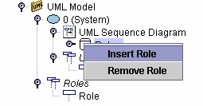
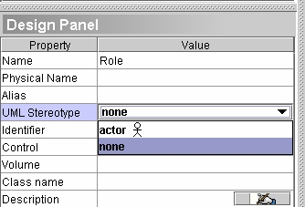

Sequence
Diagram

The Sequence diagram describes
the behavior provided by a system to interactors. The Sequence diagram
models real-time scenarios and complexity, and defines communications
between entities of the system to specify the behavior of the
participants.
The following
concepts can be used to build Sequence diagrams with Open
ModelSphere:
- Actor

- Class Role

- Activation

- Message

To
add an
actor
- Select the actor
creation tool located in the UML modeling toolbar.
- With the actor
tool selected, click anywhere inside the diagram window.
To
add a Activation
- Select the Activation
creation tool
located in the UML modeling
toolbar.
- With the Activation
tool
selected, click anywhere inside the diagram window.
To add a Role
- From the explorer select the Role group
 node under the UML
Sequence Diagram node.
node under the UML
Sequence Diagram node.
- Right click on the Role group and click insert Role.

To add a Message
- Select the Message creation tool
located in the UML
modeling toolbar ( or
 )
)
- Choose one of the Message displayed
in the toolbar.
- With the Message tool selected,
click somewhere in the
middle of the source Activation, then, in the middle of the target Activation.
Assign a UML
sterotype to an object
- Select any object from the diagram or
from the explorer.
- In the design
pannel,
choose from the list UML Sterotype.

Assign a
UML constraint to an object
- From the explorer or from the diagram
right-click an object and
click the properties tool

- Select the UML Constraint tab,
click the Link button.
Select a UML Constraint from
the pop-up window.
The common
concepts such as Semantic
Links and Graphical
Notes can also be used to
enrich your Sequence diagrams.